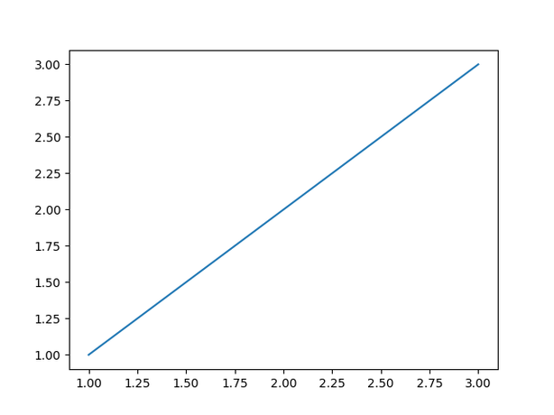

snaplot
Record and replay every step of your plotting process


snaplot is a Python package here to help your record your plotting process, without having to think about it!
It's highly inspired by {camcorder}, an R package that does pretty much the same thing. If you're an R user, check it out!
Why?
By nature, data visualization is an iterative process: no one creates the final, perfectly polished version of a graph on the first try. It always takes plenty of trial and error.
Interestingly, visualizing this process can be quite insightful. That's where snaplot comes in.
How to use?
snaplot provides a single class (Camera) and is designed to be as easy-to-use as possible.
import matplotlib.pyplot as plt
from snaplot import Camera
camera = Camera.start("my_movie")
# Step 1 — basic line
fig, ax = plt.subplots()
ax.plot([1, 2, 3], [1, 2, 3])
camera.snap()
# Step 2 — change color
fig, ax = plt.subplots()
ax.plot([1, 2, 3], [1, 2, 3], color="red")
camera.snap()
# Step 3 — increase line width
fig, ax = plt.subplots()
ax.plot([1, 2, 3], [1, 2, 3], color="red", lw=5)
camera.snap()
# Step 4 — add marker
fig, ax = plt.subplots()
ax.plot([1, 2, 3], [1, 2, 3], color="red", lw=5, marker="o")
camera.snap()
# Step 5 — change marker size
fig, ax = plt.subplots()
ax.plot([1, 2, 3], [1, 2, 3], color="red", lw=5, marker="o", markersize=15)
camera.snap()
# Step 6 — add legend
fig, ax = plt.subplots()
ax.plot([1, 2, 3], [1, 2, 3], color="red", lw=5, marker="o", markersize=15, label="cookies")
ax.legend()
camera.snap()
# Step 7 — change axis limits
fig, ax = plt.subplots()
ax.plot([1, 2, 3], [1, 2, 3], color="red", lw=5, marker="o", markersize=15, label="cookies")
ax.set_xlim(0, 4)
ax.set_ylim(0, 4)
ax.legend()
camera.snap()
# Step 8 — add title
fig, ax = plt.subplots()
ax.plot([1, 2, 3], [1, 2, 3], color="red", lw=5, marker="o", markersize=15, label="cookies")
ax.set_xlim(0, 4)
ax.set_ylim(0, 4)
ax.legend()
ax.set_title("Final Look")
camera.snap()
# 8 images, 300ms/image
camera.stop("output.gif", frame_duration=300)

In short:
- you initiate a camera with
camera = Camera.start() - you take snapshots with
camera.snap() - you save your video with
camera.stop()
For more info, check out the reference page
Installation
Some cool things
- You can run
Camera.start()multiple times with the same id without forgetting previouscamera.snap(). Unless you setforce_new=True, it will automatically recognize that you're still recording. - Even after calling
camera.stop("file.gif"), you can keep recording. If you want to save the intermediate GIF, just use a different filename likecamera.stop("file2.gif"). - It works with any matplotlib-based plotting library: seaborn, plotnine, etc